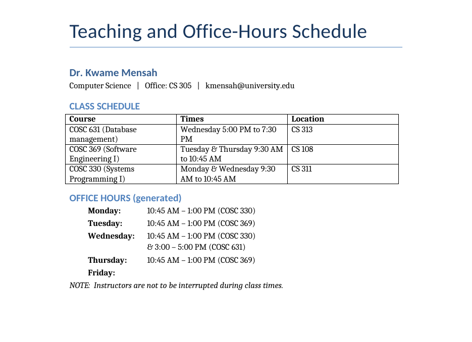

| Student | [Your name] |
| Student ID | [Your ID] |
| Instructor | [Instructor's name] |
| Date | October 2026 |
| Repository | github.com/Rovers16/office-hours |
This project automatically produces each professor's teaching schedule and
office-hours schedule from two input files: a syllabus / class-schedule file and a
faculty file. The scheduling program is written in C and organised into five modules
that are archived into a static library, libofficehours.a, and linked
with a small main program. A Makefile automates the whole process:
compiling, building the library, linking, preparing the inputs, running the program,
and generating a Word document. Python is used at the edges of the system. On the
input side, Claude extracts the data from syllabi in any layout. On the output side,
Python lays out the Word document and connects to a Prolog knowledge base that answers
questions such as "Who teaches COSC 369?" and "Which office hours are on
Wednesday?". With the sample data, the generated office hours match the sample
tables in the assignment exactly.
The assignment asks for a C system that reads exactly two input files and generates a professor teaching schedule and an office-hours schedule. The output should look like the sample tables in the specification, without hard-coding them. The solution must:
An additional goal was that the system should read a syllabus however it is formatted. Real syllabi mix tables, paragraphs and abbreviations such as “MWF 11:00–11:50am”, so a parser written for one layout would fail on the next. Section 4 explains how this is handled.
The system is a pipeline of four stages. Each stage reads files and writes files, so
the stages can be built, tested and replaced independently, and make can tell
which stages are out of date.
The responsibilities are split deliberately. All scheduling decisions are made
in C, as the assignment requires. Python is used only where it is clearly the better
tool: talking to an AI service and parsing its JSON, producing a .docx file,
and bridging to Prolog. Every stage writes plain text files. This makes each one easy to
inspect by hand, which helped a great deal during debugging.
The C program, officehours, takes exactly two input files. It refuses to
run with any other number:
build/officehours [options] SCHEDULE_FILE FACULTY_FILE
Both files are pipe-separated text, one record per line. This format is trivial to parse
in C (fgets plus a field splitter) and easy to read and edit by hand. Lines
starting with # are comments.
# schedule file COURSE|code|title|section|lecturer|days|start|end|room COURSE|COSC 369|Software Engineering I||Dr. Mensah|Tuesday,Thursday|09:30|10:45|CS 108 # faculty file PROF|name|department|email|office|course,course,... PROF|Dr. Linda Okafor|Computer Science|lokafor@university.edu|CS 214|COSC 110,COSC 241,COSC 450 OFFICE_HOUR|name|day|start|end|course OFFICE_HOUR|Dr. Linda Okafor|Monday|13:00|15:00|COSC 241
Times use 24-hour HH:MM and are stored internally as minutes after midnight,
so comparing and adding times is plain integer arithmetic. Empty fields are allowed: a
course with no lecturer or no meeting time, for example an online course, is valid.
strtok() was not used to split fields, because it merges consecutive
separators and would silently shift every field after an empty one. A small splitter in
loader.c keeps empty fields instead. Every line is validated, and errors are
reported with the file name and line number, for example
bad.psv:1: bad time '25:00' (expected HH:MM).
The faculty file is also where a lecturer can supply their own office-hours table. The
specification says the program should process “office-hours tables provided by the
lecturer”. When a professor has OFFICE_HOUR lines, those hours are used.
Otherwise the program generates office hours itself (Section 6).
The input files are stored locally in the project: the original
human-written files in input/ and the structured data extracted from them in
data/. The program opens them with ordinary fopen() calls on paths
given on the command line, and the Makefile passes relative paths inside the project.
The reasons for this choice are:
make works with no
Internet connection and no account or API key. A department web page could be down,
moved, or reformatted on the day of the demonstration.The Internet is used in exactly one optional place: turning a new syllabus into
structured data with Claude (Section 4). That happens once per syllabus, and the result
is saved locally. With Ollama mode, even that step runs without the Internet once the model
has been downloaded. A department that publishes its schedule online would simply download
the file into input/ and re-run that step.
Syllabi do not share a format. The sample schedule in the assignment is a table, while
other courses describe their meetings in sentences (“COSC 450 Operating Systems meets
TTh 2:00-3:15 PM in CS 108”). Rather than writing fragile parsing rules,
syllabus_reader.py gives the file to Claude, a large language model, and asks
for the data back in one fixed JSON structure. The structure is defined once in
Python with Pydantic models:
class Course(BaseModel):
code: str # "COSC 369"
title: str
section: Optional[str]
lecturer: Optional[str]
days: List[Day] # "Monday" ... "Sunday" only
start_time: Optional[str] # "09:30" (24-hour)
end_time: Optional[str]
room: Optional[str]
notes: Optional[str]
Claude is instructed to expand abbreviations (MWF → Monday, Wednesday,
Friday), convert times to 24-hour format, and use null rather than invent
anything the file does not state. Whatever comes back is validated against the
schema before it is used. A missing field or an invalid day name is reported as an
error instead of flowing silently into the C program. The validated data is then written in
three formats: .psv for C, .pl facts for Prolog, and
.json.
There are three ways to run this step. All of them produce the same kind of files, so the rest of the system does not know or care which one was used:
| Mode | How it works | Cost / requirements |
|---|---|---|
| Chat mode (default) | syllabus_reader.py syllabus --prompt prints the instructions and the
JSON schema. The user pastes them into the claude.ai chat with the file attached, and
saves the reply in data/. --from-json validates the saved
reply and converts it; extra text or code fences around the JSON are tolerated. |
Free claude.ai account; one manual step per syllabus. |
API mode (make MODE=api) |
The file is sent to the Claude API: PDF files directly, Word files as extracted text including tables. Structured outputs force the reply to match the schema. | An Anthropic API key; billed per request. |
Ollama mode (make MODE=ollama) |
An open model runs on the user's own computer through Ollama. Local models read
text, so PDF and Word files are converted to text first (pypdf,
python-docx). The reply is constrained to the same JSON schema and
validated in the same way. The model can be chosen with --model. |
Free; no account or Internet after the model download. An 8-billion-parameter model needs at least 8 GB of RAM (16 GB is comfortable). |
Chat mode exists because the free claude.ai plan has no programming interface, and automating the website would break its terms of use and break whenever the site changes. Splitting the work into “Claude reads the file” and “the program processes the result” keeps the system free to run while still handling any syllabus layout. Ollama mode removes the manual step and the need for an account, at the price of accuracy: an 8-billion-parameter local model is more likely than Claude to misread an unusual layout, and it cannot read scanned PDFs, which have no text layer. Because every reply passes the same validation, a model that gets the structure wrong produces an error naming the missing fields, never bad input for the C program.
The C code is split into modules by responsibility. Each module has a header in
include/ that declares only what other modules need. Functions used only inside
a module are static.
| Module | Responsibility | Main functions |
|---|---|---|
model.c / .h | Shared data structures (Course, Professor, OfficeHour, Schedule, Faculty); growable arrays; comparing course codes and person names. | schedule_add, faculty_add, same_course_code, same_person |
timeutil.c / .h | Converting between text and numbers: "09:30" ↔ 570 ↔ "9:30 AM", day names, day lists such as "Monday, Wednesday & Friday". | parse_time, format_time, parse_day_list, format_day_list |
loader.c / .h | Reading and validating the two input files. | load_schedule, load_faculty |
scheduler.c / .h | Matching professors to course sections; generating office hours or checking the ones lecturers provided. | match_courses, assign_office_hours, default_policy |
report.c / .h | Writing the results as a text report, a CSV file and Prolog facts. | write_text_report, write_csv_report, write_prolog_facts |
main.c | Command-line options, opening files, calling the library in order, exit status. | main |
The dependencies between modules point one way only. model depends on
nothing; timeutil uses model; loader,
scheduler and report use both; main uses all of them.
There are no cycles, so each module can be understood and tested on its own.
NO_TIME (-1)
marks an online course or a time that has not been announced.&.realloc
(doubling), so there is no fixed limit on the size of a department. Per-professor lists
have fixed maximums (16 sections, 32 office-hour blocks). Exceeding them is reported,
never overflowed. All string copies go through copy_field, which always
terminates the string and never writes past the buffer.The syllabus and the faculty file are written separately, so names rarely match exactly.
The syllabus may say “Dr. Mensah” while the faculty file says “Dr. Kwame
Mensah”. same_person splits both names into lower-case words, ignores
titles such as Dr. and Prof., and accepts the match when every word of the shorter name
appears in the longer one. A section belongs to a professor if the syllabus names them as
its lecturer. If the syllabus names nobody, the professor's course list in the faculty file
decides. Course codes are compared ignoring case, spaces and punctuation, so
COSC 369, cosc369 and COSC-369 are the same course.
A section nobody teaches is reported as a warning rather than silently dropped.
The specification's sample shows the pattern to follow. Office hours start when a class ends (10:45 AM after a 9:30–10:45 class), and an evening class gets office hours before it (3:00–5:00 PM before a 5:00 PM class). It also states that instructors are not to be interrupted during class time. The algorithm turns these observations into rules.
Lecturer-supplied hours. If the faculty file contains office hours for a professor, they are kept exactly as given. Each one is checked against that professor's classes, and any overlap is printed as a warning.
Generated hours. Otherwise, every class meeting is processed in week order (day, then start time), so morning blocks are placed before afternoon ones. For each meeting:
Because the busy list always includes the classes, a generated block can never overlap a
class or another block. All five numbers (135, 120, 30, 8:00, 17:00) live in a
Policy structure and can be changed from the command line, for example
--after 120 --day-end 18:00, without recompiling.
Dr. Mensah teaches COSC 330 (MW 9:30–10:45), COSC 369 (TTh 9:30–10:45) and COSC 631 (W 5:00–7:30 PM).
| Meeting | Decision | Block |
|---|---|---|
| Mon COSC 330 | Free from 10:45 until 5:00 PM; take 135 min. | 10:45 AM – 1:00 PM |
| Tue / Thu COSC 369 | Same reasoning. | 10:45 AM – 1:00 PM |
| Wed COSC 330 | Same reasoning. | 10:45 AM – 1:00 PM |
| Wed COSC 631 | Ends at 7:30 PM, after the 5:00 PM limit, so there is no room after. Before: free since 1:00 PM (the end of the previous block); take 120 min ending at 5:00 PM. | 3:00 – 5:00 PM |
This reproduces the sample office-hours table in the assignment exactly, including the Wednesday “& 3:00 – 5:00 PM (COSC 631)” line and the empty Friday. The table was not copied into the program; it follows from the rules.
A static library is an archive of compiled object files (.o)
with an index of the functions they define. On Unix it is named libname.a.
When a program is linked against it, the linker copies the object code the program actually
uses into the executable. The finished program therefore does not need the library file at
run time.
Creating it. Each library module is compiled on its own into an object
file, without linking (-c). The objects are then archived with
ar:
gcc -Iinclude -std=c99 -Wall -Wextra -pedantic -O2 -c src/model.c -o build/model.o
... (timeutil, loader, scheduler, report)
ar rcs build/libofficehours.a build/model.o build/timeutil.o build/loader.o \
build/scheduler.o build/report.o
The flags mean: r inserts or replaces members, c creates the
archive without a warning, and s writes the symbol index the linker uses to find
functions. ar t build/libofficehours.a lists the five members, and
nm shows the public functions they provide (load_schedule,
assign_office_hours, write_text_report, …).
Linking it.
gcc build/main.o -Lbuild -lofficehours -o build/officehours
-L build adds a directory to the linker's search path, and
-lofficehours means “look for libofficehours.a”. Order
matters: the library is listed after main.o. The linker only takes
from an archive the members that resolve symbols it is still missing, so it must already have
seen main.o's calls by the time it reaches the library.
Static versus shared. A shared library (.so) is not copied
into the program; it is loaded when the program starts. Shared libraries save disk space
and memory when many programs use them, and they can be updated without relinking. However,
the program then needs the .so to be present at run time. For a self-contained
program that must run on a lab computer, a static library is simpler and more robust.
Building the library separately also makes the scheduling code reusable. A different front
end, such as a web service or a unit-test driver, could link the same
libofficehours.a without touching main.c.
A Makefile is a list of rules. Each rule names a target (a file to produce), the prerequisites it depends on, and the commands that rebuild it:
$(LIB): $(LIB_OBJS) $(AR) $(ARFLAGS) $@ $^ # $@ = the target, $^ = all prerequisites
make builds the requested target by walking this dependency graph. A target
is rebuilt only if it is missing or older than one of its prerequisites. The result
is that after a change, only the affected steps run. For example, after editing
timeutil.h, make recompiles the five source files that include it
(model.c does not), re-archives the library, relinks, and regenerates the
reports. Running make again immediately prints “Nothing to be done”.
To make this work, every object file lists the headers it includes:
$(BUILD_DIR)/scheduler.o: $(SRC_DIR)/scheduler.c include/scheduler.h include/model.h include/timeutil.h $(BUILD_DIR)/%.o: $(SRC_DIR)/%.c | $(BUILD_DIR) $(CC) $(CPPFLAGS) $(CFLAGS) -c $< -o $@
The second rule is a pattern rule that compiles any .c file into a
.o. The | $(BUILD_DIR) part is an order-only prerequisite:
the directory must exist, but its timestamp changing does not force a rebuild.
Automating the whole pipeline. The rules continue past compilation, so a
single make carries the work from the input files to the final document:
data/*.json ─▶ syllabus_reader.py ─▶ build/schedule.psv, build/faculty.psv src/*.c ─▶ gcc -c ─▶ *.o ─▶ ar ─▶ libofficehours.a ─▶ link ─▶ officehours officehours + inputs ─▶ output/office_hours.txt, .csv, .pl office_hours.csv ─▶ make_docx.py ─▶ output/office_hours.docx
| Command | What it does |
|---|---|
make | Everything: library, program, reports, Word document, Prolog facts. |
make lib | Only build/libofficehours.a. |
make run | Prints the report on the screen. |
make ask | Answers the sample questions with Prolog. |
make test | Regenerates the outputs and compares them with the expected files. |
make MODE=api | Reads input/ through the Claude API instead of the saved replies in data/. |
make clean | Removes build/ and output/. |
Variables such as CC, CFLAGS and PYTHON are set with
?=, so they can be overridden on the command line. For example,
make CFLAGS="... -Werror" makes warnings fatal, which is how the code was checked
to compile without any warnings. One program run writes three output files. To keep this
compatible with older versions of GNU make, the text report is the real target and the CSV
and Prolog files depend on it, rather than using the newer “grouped targets”
syntax.
Prolog stores knowledge as facts and rules, and answers questions by searching for values that make a query true. In this project the facts are generated, never typed in by hand:
| File | Written by | Facts |
|---|---|---|
build/schedule.pl | syllabus_reader.py | course(Code, Title, Section, Lecturer, Room), meets(Code, Section, Day, Start, End) |
build/faculty.pl | syllabus_reader.py | professor(Name, Dept, Email, Office), teaches(Name, Code), office_hour(...) |
output/office_hours.pl | the C program (-p) | assigned(Prof, Code, Section), scheduled_office_hour(Prof, Day, Start, End, Code) |
Taking the office hours from the C program's output, rather than from the faculty file,
means Prolog reasons about the final schedule, including generated hours. Prolog's
answers and the printed report can never disagree. The hand-written rules in
prolog/rules.pl build on these facts. Some examples:
% Who teaches this class?
who_teaches(Code, Prof) :- assigned(Prof, Code, _).
% Which office hours are on a given day?
office_hours_on(Day, Prof, Start, End, Code) :-
scheduled_office_hour(Prof, Day, Start, End, Code).
% Can a student see this professor at this time? (in office hours and not teaching)
available(Prof, Day, Time) :-
in_office(Prof, Day, Time, _),
\+ in_class(Prof, Day, Time).
% Does any office hour overlap one of the professor's classes?
clash(Prof, Day, Code, OStart, OEnd) :-
scheduled_office_hour(Prof, Day, OStart, OEnd, _),
class_time(Prof, Code, Day, CStart, CEnd),
overlaps(OStart, OEnd, CStart, CEnd).
Other rules answer where a course meets, which days a professor is off campus, how many
office hours they hold per week, and which courses are online or meet in the evening. Times
are stored as zero-padded 'HH:MM' atoms, so Prolog's standard ordering
(@<) compares them correctly without any conversion.
Python ↔ Prolog. ask.py uses pyswip to start SWI-Prolog,
consults prolog/knowledge_base.pl (which loads all the facts and rules), runs
queries, and prints the answers. Python only builds the query and formats the result; the
reasoning is done by the rules. Anything a user types is passed into the query as a quoted
Prolog atom, so input like x'), halt, (' is treated as an unknown course name,
not as code. The knowledge base can also be used directly in swipl.
$ python3 ask.py available mensah tuesday 10:00 Can I see Dr. Kwame Mensah on Tuesday at 10:00 AM? No - they are teaching then (instructors are not to be interrupted). $ python3 ask.py office-hours wednesday Which office hours are on Wednesday? Dr. Kwame Mensah: 10:45 AM - 1:00 PM (COSC 330) Dr. Linda Okafor: 1:00 PM - 3:00 PM (COSC 241) Dr. Kwame Mensah: 3:00 PM - 5:00 PM (COSC 631)
The sample data contains two professors chosen to exercise both paths through the program. Dr. Mensah has the courses from the assignment's sample and no office hours in the faculty file, so his are generated. Dr. Okafor supplies her own office hours and also teaches an online course with no meeting time. The text report follows the layout of the sample tables:
CLASS SCHEDULE
Course Times Location
---------------------------------------------------------------------------------------
COSC 631 (Database management) Wednesday 5:00 PM to 7:30 PM CS 313
COSC 369 (Software Engineering I) Tuesday & Thursday 9:30 AM to 10:45 AM CS 108
COSC 330 (Systems Programming I) Monday & Wednesday 9:30 AM to 10:45 AM CS 311
OFFICE HOURS (generated)
Monday: 10:45 AM - 1:00 PM (COSC 330)
Tuesday: 10:45 AM - 1:00 PM (COSC 369)
Wednesday: 10:45 AM - 1:00 PM (COSC 330)
& 3:00 - 5:00 PM (COSC 631)
Thursday: 10:45 AM - 1:00 PM (COSC 369)
Friday:
NOTE: Instructors are not to be interrupted during class times.
The same results are written to a CSV file, in which every value is already formatted
for display. make_docx.py lays that file out as a Word document with one page
per professor (Figure 2). Keeping the layout in Python and the logic in C means the
document's appearance can change without touching the scheduler.

output/office_hours.docx.make test regenerates the report and the
Prolog answers and compares them, using diff, with
tests/expected_report.txt and tests/expected_answers.txt. Any
change in behaviour shows up as a readable difference.25:00), a
class that ends before it starts, unknown record types, a missing file, the wrong number of
input files, and bad option values each produce a clear message and a non-zero exit
status.-fsanitize=address,undefined),
with no errors reported. The code also compiles cleanly with
-std=c99 -Wall -Wextra -pedantic -Werror..docx file, including its tables, and with malformed replies that must be
rejected. The Ollama path was tested against a stand-in server implementing Ollama's chat
interface. This checked the request (model, schema, context size, text extracted from
.txt, .docx and .pdf files) and every failure
case: Ollama not running, model not installed, a server error, a reply cut off by the
context limit, and a reply that does not match the schema. The Prolog questions were
tested with loosely typed names, unknown names, and quote-injection attempts.sudo apt install build-essential python3-pip swi-prolog-nox pip install -r requirements.txt # pydantic, python-docx, pyswip (+ anthropic for API mode) make # build the library and program, generate output/ and the Word document make test # verify against the expected output make ask # sample questions answered by Prolog build/officehours --help
To use a new syllabus in chat mode:
mkdir -p build python3 syllabus_reader.py syllabus --prompt > build/prompt.txt # paste prompt.txt into claude.ai with the syllabus attached; # save the reply as data/syllabus_reply.json (same for the faculty file) make
data/ once per
syllabus.